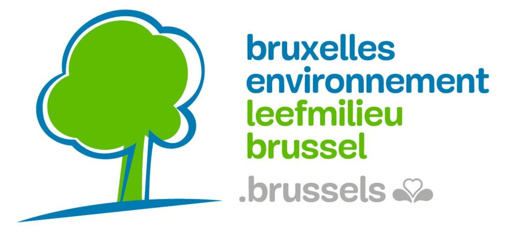
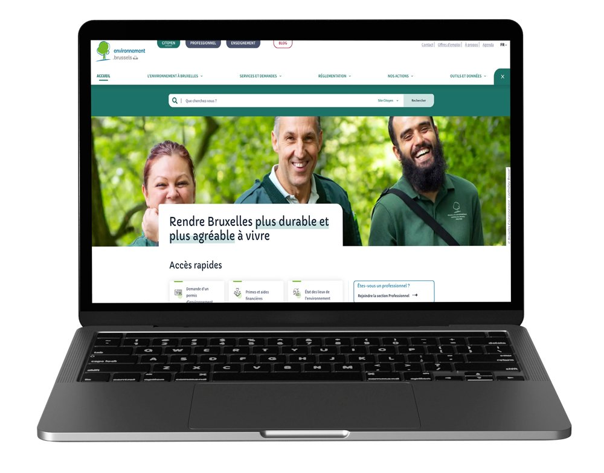
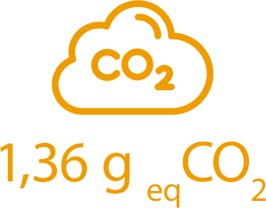
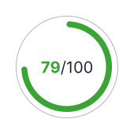
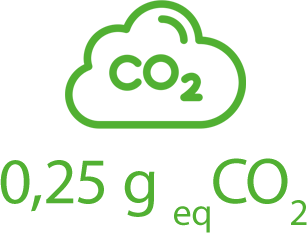

Étude de cas
Contexte de la mission
Dans le cadre de sa transformation digitale, Bruxelles Environnement a souhaité rendre son site vitrine plus durable, en intégrant la sobriété numérique dès la phase de refonte.
Le projet s'inscrit dans une logique cycle de vie (fabrication, usage, fin de vie) et dans la dynamique régionale Numérique Responsable portée avec Paradigm.
La démarche d'écoconception a été formalisée dès le cahier des charges: méthodologie, objectifs, annexes de bonnes pratiques et critères liés à l'hébergement.
Client: Bruxelles Environnement
Date de réalisation:
23/12/2022


- Écoconception intégrée à la méthodologie et à l'approche projet.
- Objectifs de sobriété numérique inscrits dans les attendus de refonte.
- Annexes de bonnes pratiques et outils d'audit recommandés.
- Exigences sur une solution d'hébergement cohérente avec la stratégie environnementale.
Mesures avant / après
Objectiver la progression



Interview
Retour d'expérience de l'équipe projet
"Nous avons demandé un audit des maquettes graphiques avant développement pour ajuster les choix les plus impactants. Nous voulions agir tôt, sans compromettre l'expérience utilisateur."
Mise en oeuvre
Comment la sobriété a été tenue dans le temps
Après audit des maquettes, un accompagnement rapproché (2 jours par sprint de 3 semaines) a permis de prioriser les actions clés et d'orienter les choix techniques les plus sobres.
Un benchmark initial sur 30 pages de l'ancien site a servi de référence. Les pages équivalentes du nouveau site ont ensuite été mesurées quotidiennement pour piloter les corrections et vérifier l'atteinte des objectifs.
Le projet montre que la réussite dépend de l'anticipation, d'une gouvernance claire des rôles et d'un suivi continu impliquant toutes les parties prenantes.
Conseils opérationnels
Les points clés à retenir
- Intégrer l'écoconception dès l'idéation, pas uniquement au développement.
- Former les équipes et expliciter les responsabilités avant démarrage.
- Objectiver les résultats avec un budget environnemental et des mesures régulières.
- Accepter des arbitrages planning pour garantir la qualité durable du livrable.
Le retour d'expérience souligne qu'un accompagnement expert permet d'accélérer l'apprentissage des équipes tout en sécurisant la trajectoire projet.
Ressources
Pour aller plus loin
- Méthodologie de calcul de l'empreinte environnementale
- Comment est calculé l'écoscore dans un benchmark web ou mobile
Auteur: Thierry Leboucq